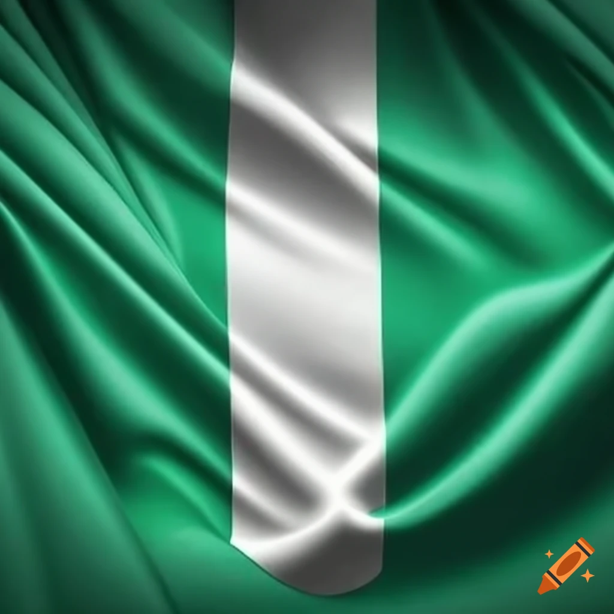

About Me
Hi, I'm Okoye Chigozie Miracle, I was born & raised in Nigeria. I live with my parents am currently a student of BYU-Idaho navigating the Dynamic Web Fundamentals. I enjoy learning new things about web development and creating user-friendly websites, am also into Forex Trading .
Anambara, Nigeria
Nigeria is a land of diversity, home to over 250 ethnic groups, each weaving its unique thread into the national fabric. From the Yoruba’s rhythmic drums in Lagos to the Hausa’s vibrant festivals in Kano, and the Igbo’s entrepreneurial spirit in Onitsha, Nigeria’s cultural mosaic is a masterpiece. This diversity isn’t a challenge; it’s our strength. As President Bola Tinubu said, “If we use our diversity not for adversity but for prosperity, the country’s hope is stability and progress.”